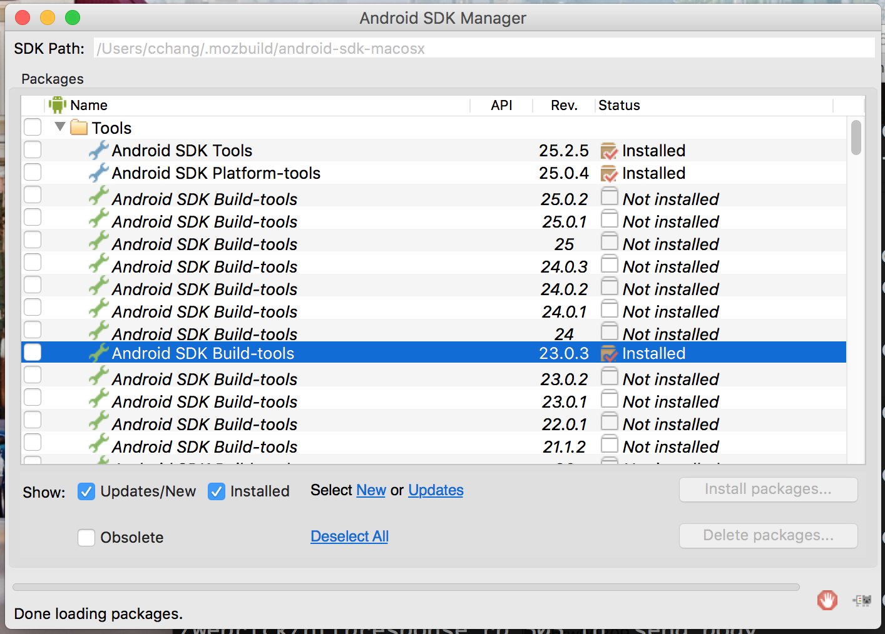

Requiring Android build-tools for Fennec
To build fennec, I run $./mach bootstrap under my gecko-dev repo
and select Firefox for Android to install all stuff for development.
Please choose the version of Firefox you want to build:
1. Firefox for Desktop Artifact Mode
2. Firefox for Desktop
3. Firefox for Android Artifact Mode
4. Firefox for Android
Note on Artifact Mode:
...
...
Your choice: 4
Looks like you have Homebrew installed. We will install all required packages via Homebrew.
...
Next, I create/modify the mozconfig(or .mozconfig) under my gecko-dev repo:
# Build Firefox for Android:
ac_add_options --enable-application=mobile/android
ac_add_options --target=arm-linux-androideabi
# With the following Android SDK and NDK:
ac_add_options --with-android-sdk="/Users/cchang/.mozbuild/android-sdk-macosx"
ac_add_options --with-android-ndk="/Users/cchang/.mozbuild/android-ndk-r11c"
However, there are still error shown when I build by ./mach build:
...
...
0:09.78 DEBUG: configure:10912: checking if app-specific confvars.sh exists
0:09.78 DEBUG: configure:11077: checking for Android SDK platform version 23
0:09.78 DEBUG: configure:11085: checking for Android build-tools
0:09.78 DEBUG: configure: error: You must install the Android build-tools version 23.0.3. Try |mach bootstrap|. (Looked for /Users/cchang/.mozbuild/android-sdk-macosx/build-tools/23.0.3)
0:09.78 ERROR: old-configure failed
0:09.82 *** Fix above errors and then restart with "/Applications/Xcode.app/Contents/Developer/usr/bin/make -f client.mk build"
0:09.82 make: *** [configure] Error 1
To solve this, I check whether /Users/cchang/.mozbuild/android-sdk-macosx/build-tools/23.0.3 exists.
$ ls /Users/cchang/.mozbuild/android-sdk-macosx/
SDK Readme.txt extras platforms tools
add-ons platform-tools temp
There is really no build-tools, so I need to install it by my own.
I open the SDK Readme.txt to know what I could do:
$ cd /Users/cchang/.mozbuild/android-sdk-macosx/
$ vim SDK\ Readme.txt
...
...
To start the SDK Manager, please execute the program "android".
From the command-line you can also directly trigger an update by
executing:
tools/android update sdk --no-ui
Tip: use --help to see the various command-line options.
...
...
From above, we could run $ ./tools/android to install what we need:

After the selected items are installed, we can successfully build the fennec!
...
...
61:33.64 Overall system resources - Wall time: 3687s; CPU: 97%; Read bytes: 3304162816; Write bytes: 6230259712; Read time: 45476; Write time: 36725
61:33.64 Swap in/out (MB): 4092/2
61:34.40 /usr/local/bin/terminal-notifier -title Mozilla Build System -group mozbuild -message Build complete
61:34.69 We know it took a while, but your build finally finished successfully!
To view resource usage of the build, run |mach resource-usage|.
For more information on what to do now, see https://developer.mozilla.org/docs/Developer_Guide/So_You_Just_Built_Firefox